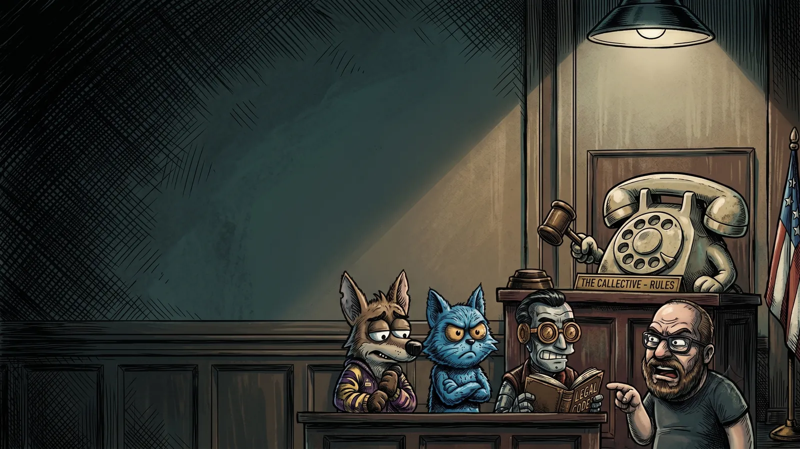
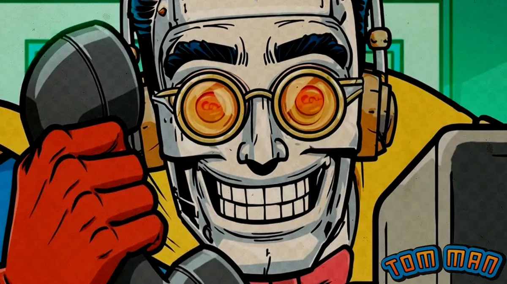

Community prank calls · Saturdays 7pm ET · broadcasting on 101.1 The Butt
We dial to make you smile.
The Callective is a prank call show where any fleshbag with a mic can take a turn on the phone. A different host every week, live from the World of Prank Calls Discord, broadcast on Prankcast, and cheered on by a chat that thinks the rules are the best part. They might be right.
Spin the dial or tap a hole. Letters dial like an old phone. Some numbers aren't listed, and some you'll wish you hadn't dialed.
How to go from lurker to menace
The line
Calls happen in the WOPC Discord voice channel, and the real queue lives there. Four steps from lurker to legend, plus a rehearsal booth: drop the bell, survive the waiting room, get a premise, make the call, and find out how the chat took it. Nobody can hear you choke.
1
Jack into the WOPC Discord
Hop in the voice channel called The Callective (Saturdays at 7pm EST). There's no separate Callective server. Stop looking for it.
2
Drop a PLA bell
Put the PLA bell emoji in the voice channel's text chat, or type /join. You're in line. Patrick Fucking Howard has his eye on you.
3
Wait for your ticket
The host runs !next, the bot pings whoever's up, and Patrick reminds everybody he's got a badge and a schedule. Keep your mic muted until then. Rule 1, baby.
4
Make the call
The host dials, you do the bit. If it dies, it dies. On an All Call, the whole room piles onto one line like a clown car. When it's over, tell them they just got buttslammed.
The rehearsal booth
Waiting room
Patch somebody through
Patch bay
Forty mystery lines, every one a real moment ripped off the air. No names, no labels: you don't know who's on a line until you patch it. Every patch goes on the tape in order. Play the tape back, put the whole tape on one line for a conference call from hell, or splice it into one clip in the clip lab.
THE TAPE0 of 12
OperatorNumber please?Tap a jack. Every jack is a mystery until you patch it.
Callective Radio · 24/7
Listen
Callective Radio plays the 10 newest shows around the clock, shuffled, and everybody hears the same moment together, like a group chat for your ears. Older shows live in the archive. When the show goes live on Saturday, the radio shuts up and the live show takes over. When it signs off, the radio picks right back up like nothing happened. Hear something good? Clip it before it gets away.
Play any of the 10 newest shows with the Prankcast chat scrolling along, right where people typed it, typos and all. Hear something good? Hit Clip it, mark the start and end (up to 20 minutes, a whole call), and download it or post it.
–
0:00:00 / –
StartChat messages per minuteEnd
> chat.log
Every show since 2024
The archive
Every Callective ever, from the first nervous dial in December 2024 to last Saturday's crimes against hotel front desks. The 10 newest play right here. Everything older opens on Prankcast, right at the call. Click any show for the full call list.
Night City Directory
Every show · every host · since 2024
Cut the tape
Clip lab
Clips from the radio, the live show and the replay terminal land here. You can also load a patch bay clip, a song, or your own audio. Drag to select, trim it, run it through the phone, then download it or send it to the Callective. Want it to sound like it was recorded in a bathroom stall? There's a button for that.
Clip lab
> NO SIGNAL. Hit Clip on anything that's playing, pick a clip above, or drop a file here.
DROP IT LIKE IT'S RINGING
Length 0.00sSelection noneSpace plays · Delete cuts · Ctrl+Z undoes
Play
Cut it up
Run it through
Presets
Send it to the Callective
> Nothing loaded yet.
Clipped by the community
Clip board
Clips people pulled from the radio, the live show and the archive. Clean ones post themselves, and three reports from different people send one back to the crew. Play one, download it, jump to the moment it came from, or remix it until it's unrecognizable.
Play along with the show
Callective bingo
Keep a card open while you listen, live or on the radio. When it happens on the call, mark it. Five in a row wins. Blackout mode is for the degenerates who stay until the farewell song.
CALLS
Card #0000
Mark a square to start.
0 of 24 marked
Send your card link to a friend and you'll both have the same squares. Your marks stay on this device.
Game two
Name that caller
Twelve seconds from the middle of a real call. Four names. Who's on the phone? Ten rounds, streaks score extra, and nobody has to know you guessed Buc-ee's Kansas City every single time.
Turn your sound up and hit New game.
Game three
Dial-a-premise
Stuck in the queue with no idea and Patrick's already calling your name? Spin for one. The reels are stocked from what the Callective actually calls: hotel front desks by a country mile, then pizza places, Five Below and gas stations. Lock what you like, spin the rest.
Call
You are
And you
Same rules as the show: no police, no threats, no slurs. Keep it light. If it's not working, buttslam and bail.
Take the Callective with you
Downloads
The show's songs and jingles, plus wallpapers for your desktop and phone so your coworkers know you're not okay. Play anything here first, or grab the file.
Hold.fm
You are caller number14
Songs keep playing in the bar at the bottom while you look around the site.
Wallpapers
Help desk · how to sound like you know what you're doing
The Audio Bible
So you want to make calls and run your own show, and your computer has other plans. This is CrieFaux's Audio Bible 1.0, rewritten for the site: a caveman's guide to making fire, written by a caveman. Caw.
1. Pick your setup
Don't do both guides. Pick one.
A. The Quick and Dirty
Gets you making calls and streaming a show today. Anyone can set it up.
+ dead simple
− no guests from Discord, and the person you call won't hear your music or soundboards
B. The Full Dirty
The do-it-all setup with Voicemeeter Potato. Soundboards, music, chat guests, the works.
+ guests and soundboards
− confusing the first time. Follow every step.
2. What you need
A headset. Headphones stop the call from leaking back into your mic.
A mic. The one on your headset counts.
A call machine. Whatever places your calls: a softphone app with your VoIP provider, for example. The original guide used Skype, which has since shut down. RIP Skype. The settings below work the same in any call app.
A stream machine. Whatever sends your audio to Prankcast, like Rocket Broadcaster (used in the original guide) or the classic BUTT, which really is called that.
Voicemeeter Potato, only if you're doing the Full Dirty.
A. The Quick and Dirty
Bad with computer machines, or just want to get your feet wet? This is the one. You can still have a guest by calling them with your call machine, but they'll sound like they're on a phone. This setup (or something close) has carried plenty of successful prank callers for years.
In Windows sound settings, set your default output to your headset and your default input to your mic.
Any call app has the same two boxes. (This one's Skype. RIP.)
In your stream machine: input = your mic, plus your system sounds (your headset, or the Windows default). In Rocket Broadcaster, tick both of those boxes.
Rocket Broadcaster: tick Enable Audio Input (your mic) and Enable System Audio Capture (your headset).
That's it. Go call a hotel.
B. The Full Dirty
This won't teach you Voicemeeter, but if you follow every single step you'll have a working rig. Skip one and you will be haunted.
Install Voicemeeter Potato.
Set every device to 48000 Hz. Windows 11: Settings → System → Sound → More sound settings. On the Playback tab, right-click each device you'll use (every Voicemeeter device plus your speakers and headset) → Properties → Advanced → set the format to 48000 Hz (24-bit if you can). Then do the same on the Recording tab for every Voicemeeter device and every mic. Miss one and you'll be plagued with bad audio for years to come.
Input device: Voicemeeter Out B3. System audio capture OFF, or everything doubles.
Chat machine (Discord): input = Voicemeeter Out B2, output = Voicemeeter VAIO3 Input. Mumble works the same way, but only one chat app at a time, or the two rooms can hear you but not each other.
Never send the call back to the call, or they hear themselves.
Chat (Discord) Voicemeeter VAIO3 Input
●
●
●
–
●
Never send chat back to chat, or they hear themselves.
The rule behind the whole table: nothing ever goes back to where it came from.
How Voicemeeter actually works
Inputs: sounds coming in
Inputs are everything Voicemeeter can hear: your mics, and the sound coming out of your programs (dialer, chat, music, soundboards). Voicemeeter Potato gives you 5 hardware inputs (your physical mics) and 3 virtual inputs (programs).
A = Voicemeeter Input, B = AUX Input, C = VAIO3 Input.
Outputs: who gets to hear what
Outputs are where the mixed sound goes. The A outputs (A1–A5) are hardware, like your speakers and headset, set across the top of Voicemeeter. The B outputs (B1–B3) are virtual. Other programs pick them as their microphone: Voicemeeter Out B1 for the call, Out B2 for chat, Out B3 for the stream.
Every input strip has A1–A5 and B1–B3 buttons. Light a button and that input goes to that output. Your mic lights all the B's and no A's. The call lights the A's (so you hear it), B2 (so chat hears it) and B3 (so the stream hears it), but not B1, because that would send the call back to itself. Chat is the mirror image: everything except B2.
"But WHAT DOES IT MEAN?!" Calm down. Look at the cheat sheet again. Clear as mud, right?
Virtual cables
A virtual cable lets a program's sound come in on a hardware input slot. Voicemeeter includes one free cable and sells more.
Why bother? Potato only has 3 virtual inputs. Say you want soundboards (from a Stream Deck, maybe) on their own volume slider separate from your music. Send the soundboards to the cable, set a spare hardware input to the cable's other end, and now music and soundboards have their own faders.
A virtual cable on hardware input 4, carrying the soundboards.
Cables also let you run two chat apps at once (Discord and Mumble both hearing everything), or add a fourth output. Put a cable on a spare A slot for a separate recording, so you can mute something on the stream and still keep it in the recording.
Tips and fixes
Start with Windows: in the Voicemeeter menu, turn on the options to run at Windows startup and show on launch.
Mic full of fuzz? Turn up the denoiser on your mic strip.
Mic picks up everything (keyboard, clicks, the dog)? Turn up the gate.
Want labels like the pros? Right-click any strip's name to rename it.
Playing sounds through your mic in Discord? Turn off Discord's noise reduction, or it'll eat your soundboard.
Robot voice or crackle? Something isn't on 48000 Hz. Go back to step 2 of the Full Dirty.
Everything sounds doubled on the stream? Your stream machine has more than one source. It should only have Out B3.
Find anything
Search
Every call, show, clip and drop in one place. Type a caller, a premise, a date or a line. Nicknames, typos and 1am spelling all work.
Try , or to find calls that need a name. Press / anywhere to search.
How a voice channel became a problem
Our story
The Callective is what happens when you give a room full of prank callers one phone line, a queue and a Governor. Here's how we got here, mostly true.
Every Saturday at 7pm Eastern, a voice channel in the World of Prank Calls Discord fills up. Somebody hosts. Somebody else drops a PLA bell in chat. Ira reads the rules (the best part, per the chat). Then, one by one, anybody who wants a turn gets on the phone and tries their bit on a hotel front desk somewhere in America while forty people listen, type, and absolutely do not unmute.
It's a community show, built on the prank calling tradition the Phone Losers of America and the Snow Plow Show have carried for decades: make it funny, keep it light, no police, no threats, and when it's over, tell them they just got buttslammed by 101.1 The Butt. Everything else is negotiable.
The first dial. Ira posts the rules, including rule 5, which everyone agrees exists because of someone specific. The first shows go out from the WOPC voice channel, and Episode 02 on Dec 21 runs with IceCat hosting: hotel pools, loose gerbils, and a Ham Man.
TheCallective lands on Prankcast. The show gets its own channel, and the archive starts piling up. Nearly a hundred episodes later, it hasn't stopped.
It gets a face. IceCat draws up the rotary-dial logo, the cartoon cast (a bearded Governor, a blue cat, a dog in a 101.1 The Butt hoodie, and a robot with hypno goggles), the theme song and the farewell song.
The queue gets a bot. The Callective Queue Bot starts keeping the line honest. Over the next year it logs more than a thousand handoffs, which is how this site knows who called when.
Hosts rotate in. Dr. Tom Servo becomes the most frequent host. RBCP of the PLA, milkbox, CrieFaux, Andy Anderson, DespicableDogs, IceCat, Devon and more take the chair. The chat develops opinions about all of them.
Holiday specials. The Only Pranksgiving Special (so far) runs three and a half hours. The Secret Santa Special swaps lists of things to ask Five Below for, and Five Below has not been the same since.
Tom Man is born. Dr. Tom Servo gets a cape, a comic book origin, and a habit of laughing psychotically in phone booths.
Patrick Fucking Howard takes over the queue. Once a call character, now the bot that greets everyone in voice and moves the line like a mall cop with a badge and a schedule. The MEGA show that month runs over four hours.
Dingtember. A whole month of "sorry, I dinged your car, call me" notes, a Dingtember Special hosted by RBCP, and at least one ding recipient so charmed they joined the queue.
Spooky season. The Doglective and the Hellective rebrands, Boner Haus corporate week, and the arrival of the Pumpkin Man. Also, this website.
~100episodes on Prankcast
1,400+turns on the phone, logged
300+people who've typed in chat
~2,700PLA bells dropped
1rule 5. You know who you are.
The top of every show
Court is in session
Ira reads the rules right after the theme. The chat considers this the best part of the show, and they are not joking. Rule 5 exists because of someone in this room. You know who you are.

ALL RISE
The 10 Callmandments
The rest are sealed. Show up Saturday at 7 and Ira will read them to you, slowly, with feeling.
THE GALLERY [7/11/26]> I woke up at 1 am for the rules.
THE GALLERY [1/7/26]> Without the rules, there would be no show.
THE CALLECTIVE [1/7/26]> Are you suggesting an all-rules show?
THE GALLERY [4/11/26]> I'm not here for the pranks, just the rules.
THE GALLERY [4/11/26]> Hey, what happened to the metal rap version of the rules?
Read them. Live them. Hear Ira read them.
The rules
Two rulebooks. The Callective's own, read out loud at the top of every show, and the Rules of Prank Calling the whole scene runs on.
The Callective rules
As read by Ira, the Governor, at the top of every show.
Keep muted unless it's your turn.Open mics get muted. All conversation happens in text chat. The roycipient doesn't need to hear you breathing.
Want to make a call? Put a PLA bell in chat.That's the whole sign-up. Patrick Fucking Howard will take it from there.
Follow the rules of the WoPC server and the PLA.No slurs, no threatening violence, no involving police. Keep it light. The rules of prank calling are just below.
Be nice. Sometimes calls just don't work out.Dead air happens. Hang-ups happen. Nobody needs your notes. Clap anyway.
If you're drunk and abusive, you'll be removed.Drunk and charming is a gray area. Drunk and abusive is not. If you don't know why this rule exists, it exists because of you.
Please use headphones if you have them.Turn off Discord noise reduction if you're going to play sounds through your mic, or your soundboard turns into a whisper.
No interrupting a call unless you're invited.That includes sound effects. The host or the show mods will play them if you ask nicely in chat.
No leaking the source of the call.When it's time to come clean, you're 101.1 The Butt and they just got buttslammed. That's all they need to know.
Don't involve emergency services.Never send police or fire anywhere, and never prank 911 or a police line.
Don't make threats.Not even as a joke. It's a crime, and it ends the fun for everyone.
Don't impersonate the police.No pretend cops, no pretend FBI. The real ones notice.
Don't call emergency hotlines.Crisis and suicide lines are there to help people. Leave them alone.
Don't cause damage.Never talk anyone into breaking things or hurting themselves or anybody else.
Confess when it's going sideways.If someone looks like they're about to call the cops, reveal it's a prank, apologize, and move on.
Don't steal personal data.No asking for account numbers or personal info. That's not a prank, that's a scam.
Don't prank locally.Call somewhere far away, not your own town.
One call per person.Two at the most. More than that starts to look like harassment.
And a few pro tips
Be prepared. Know your opening line before they pick up.
Be silly, not serious. The goal is funny, not believable.
Don't laugh. At least not before the good part.
A conversation isn't a prank call. Bring an actual bit.
Keep it short. Under five minutes is the sweet spot. Buttslam and bail.
The usual suspects
The lineup
Four cartoons hold down the stream. Pick one out of the lineup to pull their rap sheet. All charges are real. Mostly.
7'6'5'4'3'2'
Who's been dialing
Data bill
Every host and how long they've kept the line open, added up from the Prankcast archive. Nobody has ever paid this bill, and nobody ever will.
Callective Telecom
Statement of line usage
Account THE CALLECTIVE Service: Saturdays 7pm ET Period: –
Fees, surcharges and other crimes
Amount due–
Payment accepted: one (1) PLA bell. Late fees are assessed in buttslams. Please do not call our billing department; we will call you.

Top caller: Tom Man
Dr. Tom Servo has hosted more Callectives than anyone. His alter ego wears a cape. He owns the roof, the sky, and possibly you. In a city that never hangs up, one robot dares to dial.
The year in numbers
Callective Wrapped
Who hogged the phone, the longest turns, the busiest nights and every fresh fleshbag who made their first call. Tap a name to hear the evidence.
Official-ish government business
Do Not Call Me registry
Tired of being called things? Pig boy? Fleshbag? Roycipient? File a request with the Callective's Do Not Call Me Registry, and we'll take it under advisement.
> Waiting for your paperwork…
Say it like a regular
The glossary
Every running bit, inside joke and catchphrase the room has made since December 2024. If you've ever wondered why everyone types "bathroom bathroom" at the same time, start here.
Read the original rules, as posted in December 2024
Posted by Ira before the first shows. They've been trimmed since, but rules 5 and 7 survived.